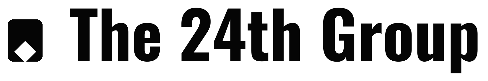

The 24th
Group
The master brand system for a focused portfolio across culture, infrastructure and operational technology.
Systems.
Future.
One operating home. Distinct ventures. A shared standard of clarity.
The Group should feel disciplined, editorial and quietly confident. It should not look like a generic holding company, consultancy or venture fund.
What the Group stands for
The brand follows the operating thesis: make fragmented, manual or unreliable work clearer, more structured and more dependable.
Clarity
Strong hierarchy, direct language and deliberate spacing. Make the important thing easy to see.
Discipline
Consistency matters more than decorative novelty. Systems should feel intentional and maintained.
Long-term
Build identities that can mature. Avoid visual decisions dependent on short-lived trends.
The Group mark and lockup
The landing-page header treatment is the standard for digital Group identity. Supplied lockups remain the primary artwork for documents, covers and static brand applications.


This CSS mark + Inter wordmark treatment matches the Group landing page and should be used for site-level headers and compact digital navigation.

Use for favicons, app icons and constrained ownership marks where the Group name is already clear.
Neutral first. Gold with purpose.
Black, white and warm paper do most of the work. Gold is a signal, not a default surface.
Condensed display. Neutral body.
The typography system is inherited directly from the landing page.
Structured, editorial, spacious.
The Group is not a card-heavy SaaS brand. Prefer strong grids, open space, fine rules and restrained surfaces.
Alignment first
Build pages around a consistent content width and clear vertical rhythm. Elements should feel placed, not floated.
Use fewer containers
Cards are functional tools, not decoration. Prefer sections, rules and hierarchy when a container adds no meaning.
Warm surfaces sparingly
Paper and soft accent surfaces are for contrast and emphasis, not blanket backgrounds.
Quiet geometry, not decoration.
Use simple circles, fine rules, dots and technical/editorial structures only when they support hierarchy or meaning.
Circles and nodes
The landing-page orbit is a useful reference for restrained geometric expression. Keep it sparse and secondary.
Thin separators
Use subtle grey rules to create rhythm and structure instead of heavy boxes.
Black statements
Dark sections are reserved for major statements, emphasis and strong transitions.
Clear, measured, confident.
The Group speaks like an operator. Avoid inflated startup language, generic consulting phrases and investor-first positioning.
Plain and specific
“We build where important work is still fragmented, manual or unreliable.”
Hype and abstraction
Avoid phrases such as “revolutionising industries”, “disrupting ecosystems” or claims that are not grounded in real work.
One visual discipline across formats.
Web, Slate reports, documents and presentations should feel related even when their layouts differ.
Landing-page standard
Inter navigation, CSS Group mark, IBM Plex Sans Condensed headlines, white/paper/black composition and restrained gold signals.
Editorial intelligence
Use strong titles, metadata, evidence, concise status language, thin rules and clean tables.
Large ideas, low noise
One idea per screen where possible. Avoid dense consultancy-deck formatting and decorative charts.
Powered by The 24th Group
Product identities remain primary. The ownership line connects them to the Group without making every product visually identical.
Product brand first. Group ownership second.
Use the ownership line on venture websites, product documentation and selected public surfaces where Group provenance matters. Do not use it as the Group’s own tagline.
Keep the system recognisable.
Consistency should come from discipline, not from forcing every venture into the same visual personality.
Do
- Use the landing-page identity as the Group digital standard.
- Preserve actual logo assets and proportions.
- Use IBM Plex Sans Condensed for display and Inter for body/UI.
- Keep gold restrained.
- Let each venture retain its own character.
Don’t
- Substitute a different font for the Group wordmark treatment.
- Invent alternative Group marks or lockups.
- Overuse cards, gradients or generic startup visuals.
- Make product brands look like reskins of the Group site.
- Use “Powered by The 24th Group” on Group-owned documents as a tagline.